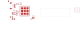

Board design in progress · not ready to manufacture
We are designing one infrared USB camera.
We have editable circuit and PCB files. We do not yet have a complete, working camera design. The screen you saw was a close-up of one unfinished board.
The whole device
Outside the cameraComputer / USB hubConnects to the controller through four wires: power, ground and USB data.
Larger board · 32 × 20 mm draftControllerThe ESP32-P4 receives the images. Flash, power circuits and USB parts support it. The four-contact JST goes here.
Short flex~30 mm plannedNot designed yet
Small board · 14 × 14 mm draftSensor headOV9281 image sensor, with a lens, IR filter and illumination still to be selected and integrated.
This diagram explains the parts; it is not a finished mechanical drawing. Both boards together are one camera. Their dimensions are provisional, and the current flattened layout is about 76 mm long.
Why the PCB picture looks spread out
It is a flat view of solder pads and component outlines, not a photograph of assembled electronics. Most controller components sit on the other side of the board. Blank outlined areas reserve space for wiring and a connector. Much of the copper wiring is still absent.
The two boards are separated in the overall picture to leave room for the proposed flex. That gap is deliberate; the flex itself is still missing. Front and back views are two sides of the same board, not extra boards.
Where we are in the process
Draft existsCircuitParts and their intended electrical connections are recorded. Basic schematic checks pass, but the circuit is not hardware-tested.
We are herePhysical board designParts have positions. Some copper connections exist. The remaining wiring, power planes, flex interface and component choices are unfinished.
Still aheadBuild and prove the cameraFinish and review the PCB, integrate the optics and LEDs, fabricate and assemble it, then run firmware and record infrared images.
The next useful milestone is a complete, reviewed PCB design that can be sent for fabrication. The current R04 files cannot be sent off to produce a working camera. A complete camera also needs the optics, illumination and verified firmware.
Show the actual saved board draft

Actual KiCad geometry, front side: controller on the left; sensor head on the right. The connecting rectangle represents the planned flex, not manufactured copper. Red shapes are pads and the few routed traces.
The board files are saved. You do not need FreeCAD or KiCad open to understand this overview. For detailed inspection, the previous front/back comparison and design record remain available.